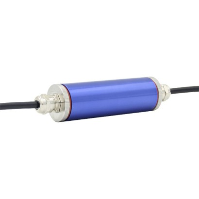
WIKA Model B1940
Analogue cable amplifier
Loadcell, cảm biến lực nén – kéo và bộ khuếch đại tín hiệu WIKA cho cân và kiểm định.
Chọn model để xem thông số, ứng dụng, datasheet và gửi yêu cầu báo giá WIKA chính hãng.

Analogue cable amplifier
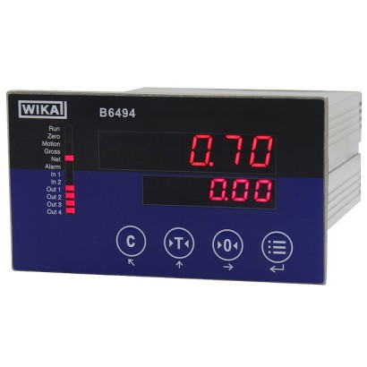
Industrial mV/V measuring instrument
Electronics
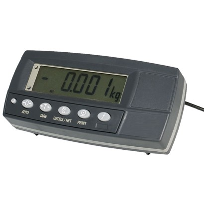
Strain gauge weighing electronics
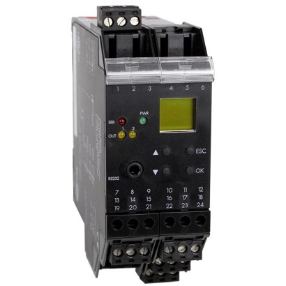
Digital limit switch
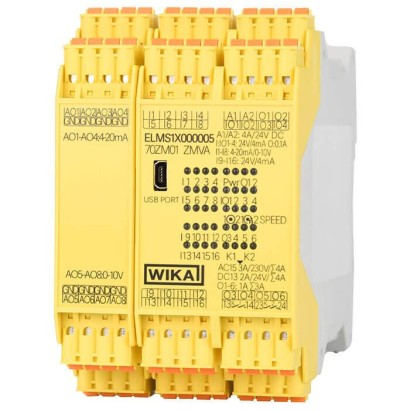
Safety electronics
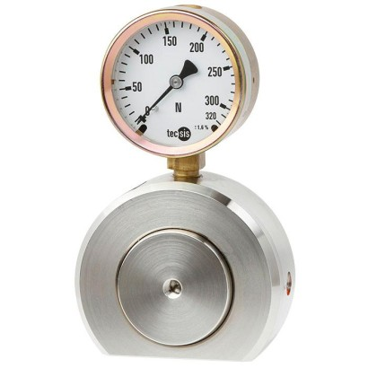
Hydraulic compression force transducer
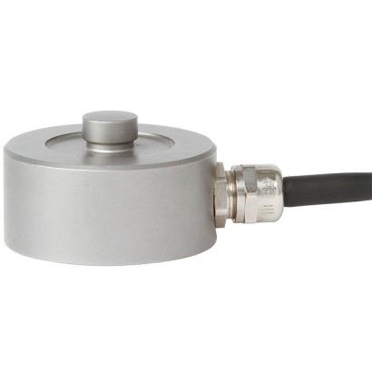
Compression force transducer with strain gauge
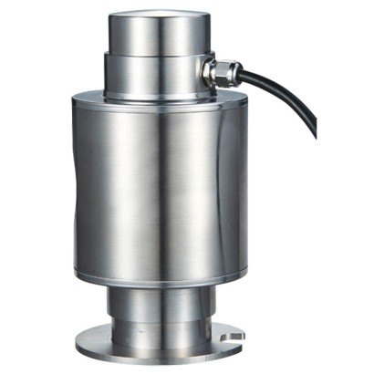
Compression load cell
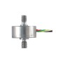
Tension/compression force transducer with strain gauges
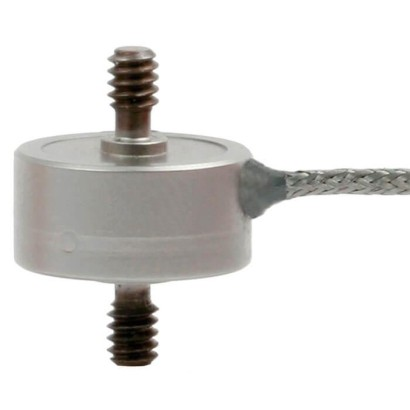
Tension/Compression force transducer with strain gauges
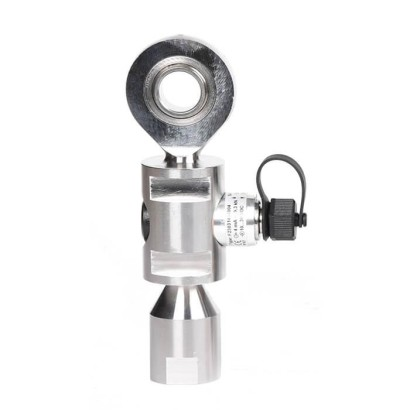
Tension/compression force transducer
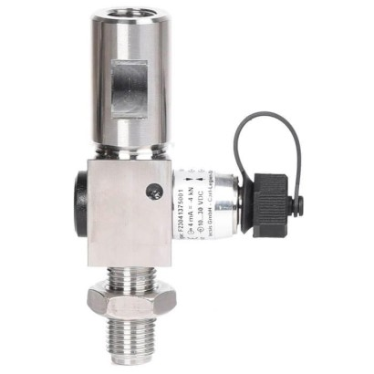
Tension/compression force transducer
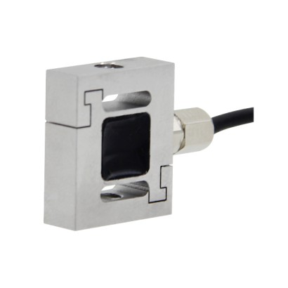
Miniature tension/compression force transducer
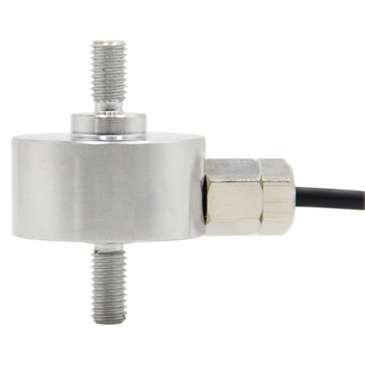
Tension/compression force transducer
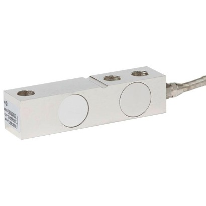
Shear beam
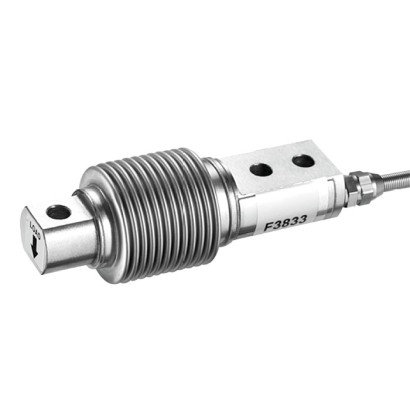
Bending beam
Load cells
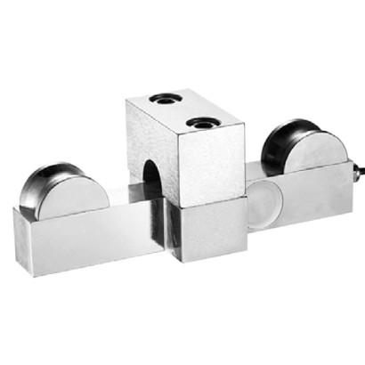
Wire rope force transducer up to 40 t
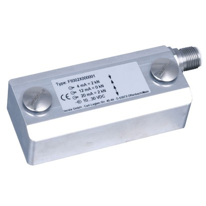
Strain transducer
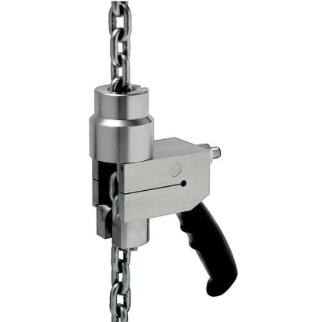
Chain hoist test set
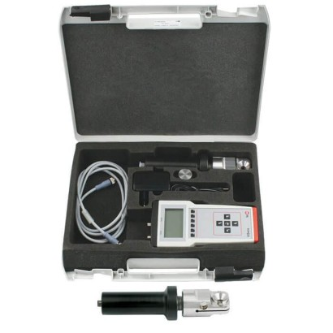
Test set for measurement of electrode forces
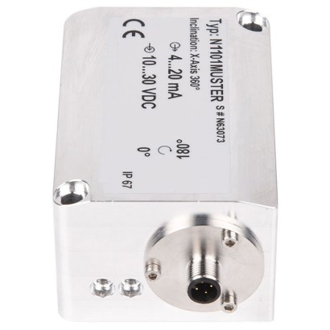
Inclination sensor
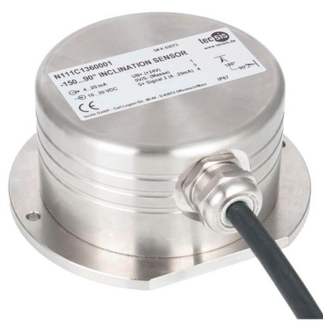
Inclination sensor
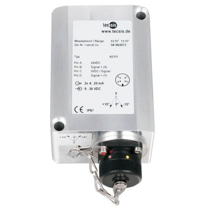
Inclination sensor
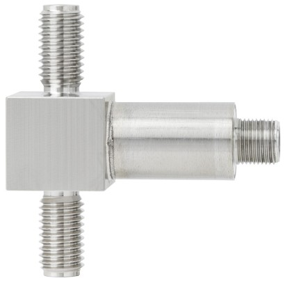
Tension/compression force transducer
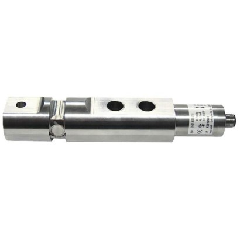
Shear beam
Load pins
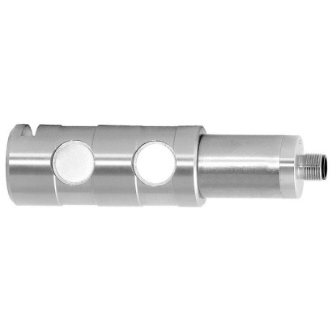
Load pin
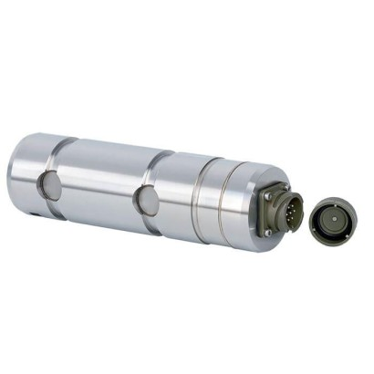
Load pin
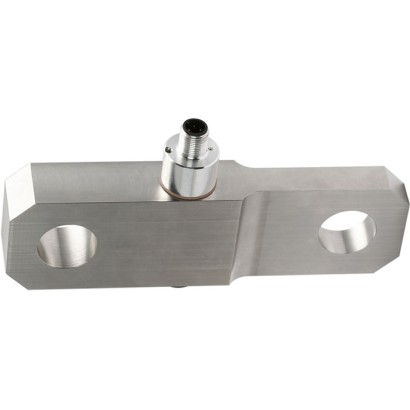
Tension links
Tension link
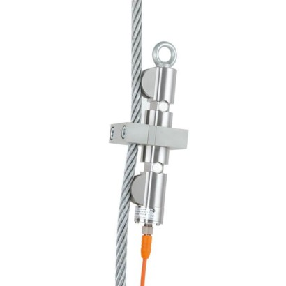
Wire rope force transducer